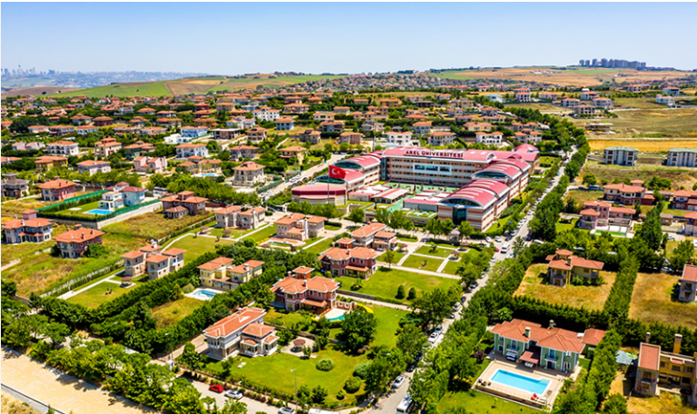
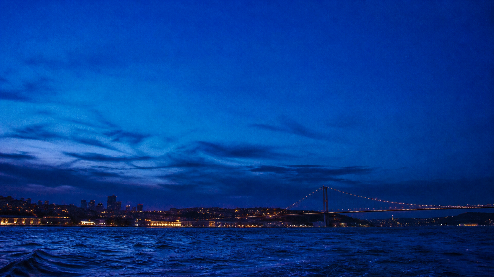
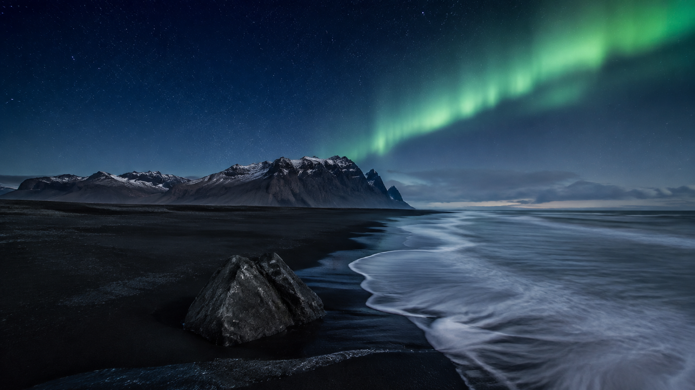

HAYATIMIN BİR PARÇASIÖğrencilik devam.
Arel Üniversitesi’nde bilgisayar mühendisliği üçüncü sınıftayım. Bugünümün önemli bir parçası dersler, yarınımın gündemi ise öğrendiklerimle neler yapabileceğim.
Bir yanım mühendislik, bir yanım merak.
Aklımda fikirler, önümde yeni yollar.
Ben Emre. Burası benim dünyam.

01 / EKRANIN DİĞER TARAFINDA
Selam, ben Emre Can. Bir şeyin nasıl çalıştığını merak etmekle başlayıp “Ben olsam nasıl yapardım?” diye düşünürken buluyorum kendimi.
Arel Üniversitesi’nde bilgisayar mühendisliği 3. sınıf öğrencisiyim. Üniversite hayatı, aklıma takılan fikirler ve geleceğe dair planlar arasında kendi yönümü arıyorum.
Bu siteyi de kendimden bir parça bırakmak için hazırlıyorum. Nelerle uğraştığımı, aklımda neler olduğunu ve zamanla ortaya koyduğum işleri burada paylaşmak istiyorum.
02 / HAYAT ŞU AN
Tamamlanmış bir hikâye değil.
Devam eden bir yolculuk.

HAYATIMIN BİR PARÇASIArel Üniversitesi’nde bilgisayar mühendisliği üçüncü sınıftayım. Bugünümün önemli bir parçası dersler, yarınımın gündemi ise öğrendiklerimle neler yapabileceğim.
Bu siteyi şekillendiriyorum. Bana benzeyen, benimle değişen bir alan.

BENİ HAREKETE GEÇİRENBir uygulamanın arkasında ne var? Bir fikir nereden başlar? Bazen tek bir soru, peşinden gitmek istediğim yeni bir konuya dönüşüyor.
03 / HENÜZ YAZILMAMIŞ SAYFALAR
Aklımdaki fikirleri denemek,
ortaya bana ait işler koymak
ve severek çalışacağım alanı bulmak.
Bilgiyi yalnızca bilmekle bırakmayıp kendi çalışmalarımda kullanmak. Küçük de olsa çalışan bir şey ortaya koymak.
Farklı konuları deneyerek hangi alanda daha çok çalışmak istediğimi anlamak. Merak ettiğim konulara zaman ayırmak.
Problemleri anlayabilen, çözüm üretebilen ve yaptığı işin sorumluluğunu alabilen biri olmak. Öğrenmeyi mezuniyetle bitirmemek.
04 / YOLLARIMIZ KESİŞSİN
Bir fikrin, bir sorun ya da sadece söyleyecek bir merhaban varsa,
GitHub profilim bir tık uzakta.